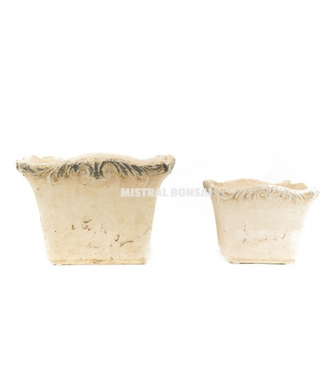
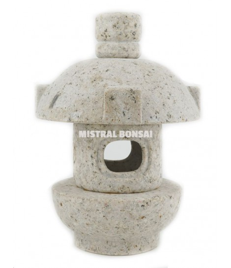
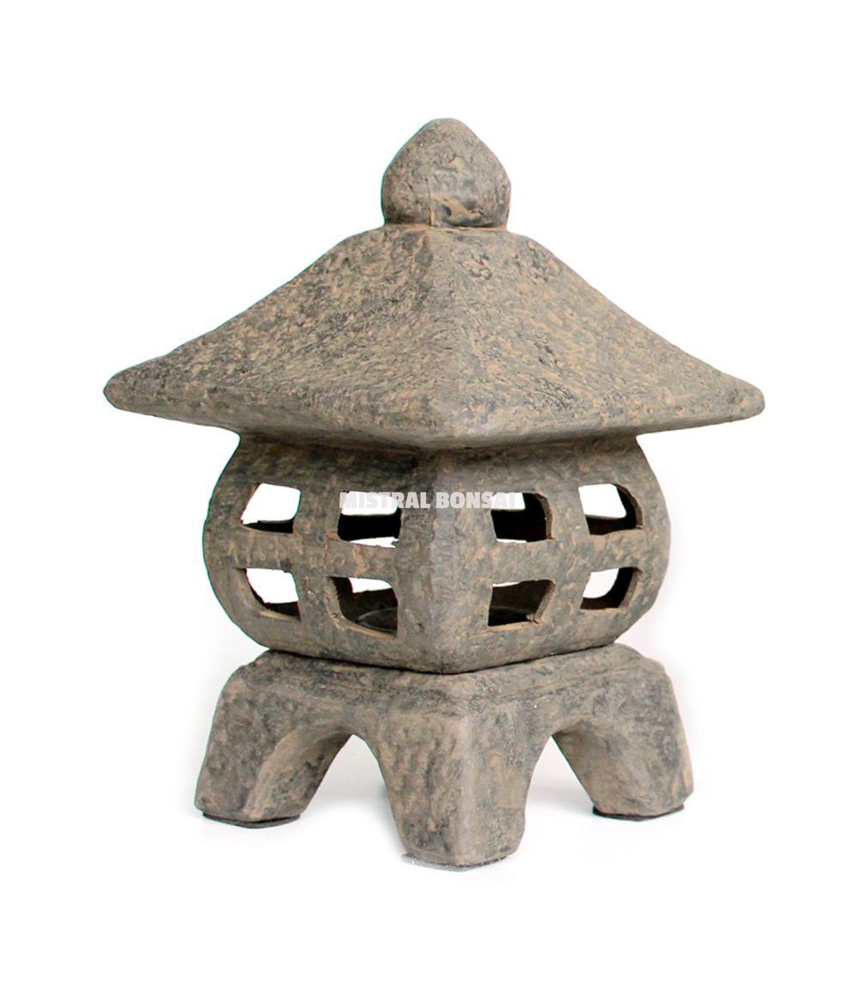

Macetero cuadrado Florencia. Set 2 unidades. 18€
Macetero cuadrado Florencia. Set 2 unidades.

Linterna japonesa de granito OKI 16 cm color marrón 110.5€
Linterna japonesa de granito OKI 16 cm color marrón. Las linternas no faltan nunca en los jardines japoneses. De noche su tenue luz da una gran impresión de serenidad. Estas pequeñas linternas de granito puede colocarse en cualquier rincón del jardín, pero también pueden decorar el interior de nuestras casas.
Dharma Buddha con túnica 22.5€
Dharma Buddha con túnica con porta velas. Representa la iluminación el despertar y la inteligencia.

Linterna volcánica L 28.99€
Las linternas no faltan nunca en los jardines japoneses. De noche su tenue luz da una gran impresión de serenidad. Estas pequeñas linternas de cerámica con apariencia de piedra pueden colocarse en cualquier rincón del jardín, pero también pueden decorar el interior de nuestras casas.